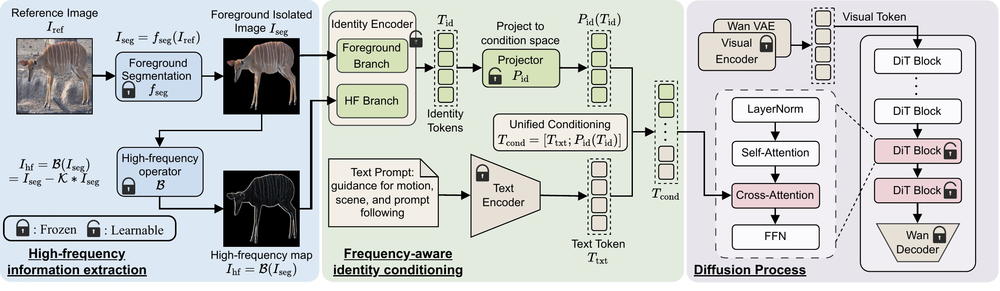
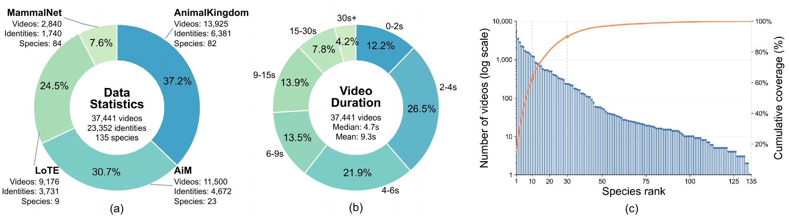

Abstract
Individual-level wildlife identification often suffers from data scarcity, as varying observations of the same animal under diverse poses, viewpoints, and motions are rarely available. Image-to-video (I2V) generation offers a promising way to mitigate this limitation by synthesizing additional observations from a single reference image.
However, existing I2V models mainly emphasize global layout, semantics, and motion, and therefore often fail to preserve fine-grained local appearance cues that distinguish one wildlife individual from another, such as fur texture, stripe boundaries, spot configurations, and contour transitions. We observe that these identity-critical cues are closely related to high-frequency information, which is essential for distinguishing individuals.
To address this challenge, we propose WildIcon, a high-frequency-guided I2V framework for wildlife individual consistency. Specifically, WildIcon introduces a frequency-aware identity encoding branch that extracts individual-specific high-frequency cues from the reference image. Combined with isolated foreground information, the resulting identity tokens are then injected into cross-attention blocks as identity conditioning. Building on a frozen backbone with lightweight identity adaptation, WildIcon preserves fine-grained identity cues visible in the reference image while retaining the motion controllability and semantic fidelity of the base I2V model.
In addition, to support the training and evaluation of wildlife individual-consistent I2V, we construct WildlifeVid, a wildlife-centric video dataset with high-quality, temporally coherent clips and individual-level identity labels. Experiments on I2V generation and downstream animal re-identification (ReID) show that WildIcon achieves stronger individual consistency than existing baselines, and that its filtered outputs can serve as useful candidate training augmentations for downstream ReID.
One photograph in, a moving individual out
A reference photograph and a text prompt, paired with the generated video.
Identity is in the fine detail
Stripe boundaries, spot configurations, fur texture and contour transitions tell one individual from another. These cues sit in the high frequencies of the image, and they are what I2V models tend to lose.
Move over the photograph to look through the high-frequency lens.
Method
WildIcon adds a foreground-filtered high-frequency identity branch to a frozen Wan I2V backbone.

Foreground-filtered high-frequency cues
The reference animal is isolated from its background, and a high-pass map of the foreground exposes stripes, spots and contour transitions.
Identity tokens through cross-attention
Foreground appearance and high-frequency cues become identity tokens, fused with the text tokens into one condition sequence for selected middle and late DiT blocks.
Frozen backbone
The Wan I2V backbone stays frozen apart from lightweight identity adaptation, so motion control and prompt following come from the base model.
WildlifeVid
A wildlife-centric video dataset with temporally coherent clips and individual-level identity labels, assembled from MammalNet, Animal Kingdom, LoTE and AiM.

Annotations are released under CC BY 4.0. Source videos come from the original datasets under their own terms. Annotations and data card
Gallery
Each video carries its reference photograph in the corner. Hover to read the prompt; click to open it larger.
Citation
@article{li2026generating,
title={Generating the Wild: Individual-Consistent Image-to-Video Generation for Wildlife},
author={Li, Yuzhuo and Zhao, Di and Zhang, Xinyu and Wilson, Daniel and Koh, Yun Sing},
journal={arXiv preprint arXiv:2610.05587},
year={2026}
}
Acknowledgements
WildIcon is built on Wan2.2 and DiffSynth-Studio. We thank both open-source communities for releasing the models and the training and inference infrastructure this work relies on.
WildlifeVid is assembled from MammalNet, Animal Kingdom, LoTE-Animal and Animal-in-Motion (AiM). We thank their creators for making these datasets available.